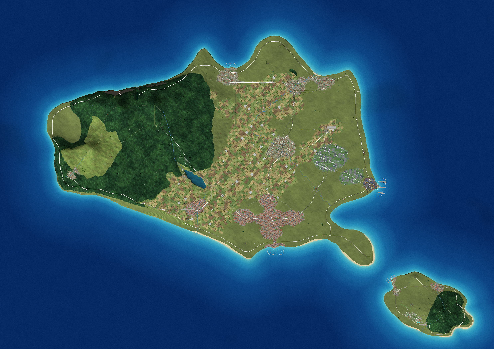
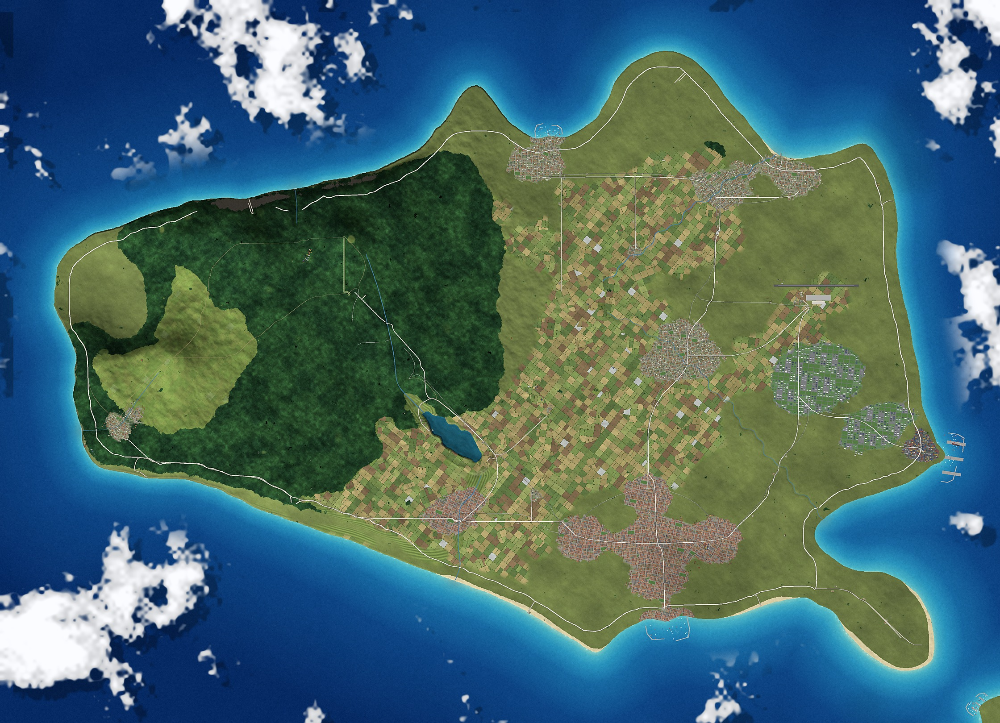

01 · PŘEHLED
Hlavní atlas
Reliéf, příroda, sídla a doprava.
Souostroví v severozápadním Pacifiku
Britské pobřeží, japonské uličky a česká stopa uprostřed oceánu. Poznejte Larpidii — fiktivní ostrovní stát vytvořený pro školní projekt ZSV.

Larpidie & Paraland 01° · Tichý oceán ATLASMalá země, velký příběh
Larpidie je modelový stát na dvou ostrovech jižně od hlavních japonských ostrovů. Na hlavním ostrově se střídají zalesněné hory, malé obce, pobřežní pláže a město s historickým přístavem.
Její svět spojuje promyšlenou veřejnou dopravu, krátký pracovní týden, exportní průmysl a cestování, které počítá s přírodou i místními obyvateli.
Seznámit se se zemí ↗
33° 54′ N / 137° 36′ E*Krajina protikladů
Na západě ostrova se zvedají lesnaté hory, vodopády a pěší stezky. Východní nížina hostí sídla a udržitelné továrny; na jihu leží pracovní návrh hlavního města Larpingtonu.
*Souřadnice jsou pouze pracovní model. Larpidie neexistuje na skutečné mapě.
Otevřít atlas ↗Začněte objevovat
Vyberte si cestu: prohlédněte si mapy, projděte si obrazový balíček nebo si připravte podklady pro prezentaci.
Atlas & mapy
Od siluety obou ostrovů až po ulice hlavního města. Vyberte si mapu a objevujte detaily; v interaktivním atlasu můžete hledat místa, přibližovat a zapínat mapové vrstvy.
Mapová knihovna
Všechny mapy a pohledy z projektu na jednom místě. Vyberte mapu pro zobrazení ve větším formátu.
Reliéf, příroda, sídla a doprava.
Pobřeží, výšky, vodstvo a povrch.
Města, sídla a správní členění.
Schválená místa, návrhy a otevřená rozhodnutí.
Železnice, cesty a propojení ostrovů.
Tři návrhové linky včetně spojení s Paralandem.
Lesy, zemědělská půda a zastavěná území.
Simulovaná satelitní vizualizace Larpidie a Paralandu.
Lesnaté pohoří, jezero a horské údolí.
Menší turistický ostrov a jeho okolí.
Čtvrti, bloky, ulice, veřejné budovy a doprava.
Simulovaný detail hlavního města a jeho pobřeží.
Mapy a letecké pohledy představují návrhová data a simulované vizualizace fiktivního světa. Nejde o skutečné družicové snímky ani GPS.
Obrazový příběh
Dvacet fotografických scén, čtyři krátká videa a mapa každého záběru. Galerie propojuje atmosféru míst s atlasem a nabízí prompty i metadata scén.
Galerie připravena · fotografie a videa zatím nebyly vygenerovány
Obrázky v galerii jsou připravené scény a mapové podklady. Skutečné fotografie a videa se v balíčku zatím nevygenerovaly; jejich stav je uveden přímo u scén.
Encyklopedie Larpidie
Uspořádaný přehled historie, geografie, politiky a života v Larpidii. U každého údaje je rozlišené, co je součástí schváleného základu a co zůstává návrhem.
Stáhnout textový dokument ↓Larpidie je fiktivní ostrovní stát v severozápadním Tichém oceánu, jižně od hlavních japonských ostrovů. Tvoří ji větší hlavní ostrov a menší turistický ostrov Paraland. Projekt spojuje alternativní historii, ostrovní geografii a témata ze základů společenských věd.
Název Larpidie vychází ze slova „larp“ a představuje radost z výjimečných, estetických a zážitkových věcí bez povyšování nad ostatní. Neoficiální hodnoty země zdůrazňují aktivní život, komunitu, dostupné příležitosti, přírodu, vzdělávání, práci, kulturu a duševní život. Motto „Žij naplno, s respektem“ je zatím návrh. Vlajka, státní znak, hymna a státní barvy dosud čekají na vytvoření.
Hlavní ostrov má podle schváleného zadání rozlohu přibližně 150 až 200 km². Na severozápadě se zvedá menší pohoří s nejvyššími vrcholy mezi 500 a 600 metry. Západ ostrova pokrývají lesy, horské řeky a skalnaté pobřeží; ve vnitrozemí leží vodopády, přehradní jezero a návštěvnická krystalová jeskyně. Východní část tvoří nižší krajina vhodná pro sídla, zemědělství a průmysl. Na jihu se pobřeží otevírá k městu a historickému přístavu.
Klima nabízí horká léta, výrazná roční období a občasný sníh ve vyšších polohách. Zimní sporty mají krátkou sezónu; stálou sněhovou pokrývku nelze při této nadmořské výšce předpokládat. Vzhledem k poloze v Pacifiku musí model země počítat s tajfuny, pobřežními bouřemi a zemětřesením.
Hlavní ostrov, jeho orientační rozloha a přírodní rysy. Přesné souřadnice a podrobné rozložení míst jsou pracovní návrh; souřadnice nepředstavují skutečnou polohu.
Oficiálními jazyky jsou čeština a angličtina, rozšířené postavení má také japonština. Mezi města, která mají být součástí podoby země, patří Praha, Čimprlichovo Hradiště, Havlišovo Doupě a Ōru Maito. Další sídla — například Aokawa a Hoshimachi — jsou návrhy. Hlavní město se v mapách a plánech pracovně jmenuje Larpington; jeho název dosud není skupinou potvrzen.
Architektura kombinuje anglické a velšské cihlové či kamenné domy, kostely, zahrady a historická náměstí s kompaktními japonsky inspirovanými uličkami. Svoboda náboženství je součástí zadání; žádné konkrétní náboženské rozložení obyvatel zatím schváleno není.
Návrh občanství počítá s několikaletým pobytem a znalostí jazyka a zákonů; mimořádný přínos může některé kroky urychlit. Zdravotní stav ani fyzická zdatnost nemají být podmínkou. Podoba veřejných služeb má spojit dostupné školství, základní zdravotní péči a infrastrukturu s osobní volbou a možností soukromých služeb; konkrétní rozsah těchto programů zůstává návrhem.
Navržené ústavní uspořádání stojí na čtyřech spoluvládcích a demokraticky voleném parlamentu. Každý spoluvládce má podle schváleného základu právo veta. Při rovnosti hlasů se počítá s občany jako s dalším hlasem, konkrétní procedura však čeká na dopracování. Návrh obsahuje také mimořádné „právo zastavení“: přijetí nových běžných zákonů by zastavil souhlas nejméně 95 % všech oprávněných občanů, zatímco základní služby musí pokračovat.
Počet patnácti poslanců a čtyřleté volební období jsou pracovní návrhy. Ústava, soudní systém i řešení případného veta vyžadují další podrobnosti, aby se předešlo dlouhodobému zablokování státu.
Podoba veta, role referenda, složení parlamentu a měnový vztah k České republice potřebují přesné právní vysvětlení.
Ekonomika kombinuje exportní průmysl vlastněný státem, specializované biologické suroviny, chemické polotovary, turistické služby a luxusní maloobchod. Čisté zisky státních podniků mají přispívat k financování veřejných služeb. Pracovní týden je v zadání běžně čtyřdenní: šest hodin denně od pondělí do čtvrtka, celkem 24 hodin týdně. Pro nepřetržité služby se předpokládá směnný provoz.
Mořské mikrořasy jako obnovitelný zdroj pro výrobu biocrude a vzácný modrozelený drahokam zvaný larpidit jsou zatím návrhy. Daňové sazby a pracovní ekonomické propočty jsou modelové; nesmějí se prezentovat jako skutečně naměřené statistiky. HDP země navíc není totožné s příjmy státního rozpočtu.
Podle příběhu dorazili první britští osadníci kolem roku 1600. Založili přístavy, kostely, tržiště a venkovská sídla; významnou roli mělo obilnářství a omezené pěstování rýže na zavlažovaných terasách. Izolace a nedostatečná obchodní infrastruktura brzdily růst populace.
V novější části příběhu se poslední král zadlužil a předal rozsáhlé hospodářské koncese fiktivnímu magnátovi Košťálovi. Po jeho smrti čtyři vzdálení dědicové zveřejnili dokumentární video a pomohli odhalit zneužívání koncesí. Následovalo vyšetřování, referendum o ústavě a vznik systému čtyř spoluvládců. Události, případ i postava Košťála jsou zcela smyšlené a nepředstavují tvrzení o skutečných osobách.
Konkrétní dny uvedené v hlavní projektové časové ose jsou dosud návrhové, nikoli potvrzená historie.
Hlavní ostrov počítá s elektrifikovanými auty, sdílenými lehkými elektrickými dopravními prostředky a sítí pěších a cyklistických tras. Návrh železnice tvoří tři linky: zážitková trasa L1 vede do horské oblasti kolem vodopádu a jeskyně, L2 propojuje městečka a průmyslovou nížinu a L3 obsluhuje hlavní město a pokračuje podmořským tunelem na Paraland. Prosklený úsek tunelu je mimořádně náročný inženýrský návrh, ne běžná technologie.
Paraland je menší ostrov určený zejména rekreaci a cestovnímu ruchu. Nabízí hotely, aquapark, lesy, pláže, promenádu a historické památky. Rezervace kapacit má chránit přírodu a každodenní život místních obyvatel; návštěva hlavního ostrova není turistům zakázána.
Larpidie je fiktivní ostrovní stát v Tichém oceánu jižně od Japonska. Tvoří ji hlavní ostrov o rozloze přibližně 150 až 200 kilometrů čtverečních a menší turistický ostrov Paraland. Žije zde podle návrhu 20 až 40 tisíc obyvatel a úředními jazyky jsou čeština a angličtina. Vládu tvoří čtyři spoluvládci s právem veta a demokraticky volený parlament. Ekonomika staví na státním exportním průmyslu, dopravě a cestovním ruchu. Zajímavostí je běžný čtyřdenní pracovní týden a návrh železničního spojení pod mořem na Paraland. Celý stát, jeho dějiny i mapy jsou součástí školního fiktivního projektu.
Encyklopedie vychází z projektové bible Larpidie a souvisejících geografických a společenských podkladů. Zelené označení znamená schválený základ příběhu. Oranžové označuje návrh, který autoři mohou ještě změnit. Některé právní a číselné detaily čekají na rozhodnutí. Konkrétní stavové poznámky najdete také u mapových objektů a v původních souborech projektu.
Larpidie, její historie, instituce, lidé, mapy i hospodářské údaje jsou součástí fiktivního školního projektu. Názvy skutečných značek uvedené v projektových podkladech neznamenají skutečnou spolupráci. Košťál je fiktivní postava.